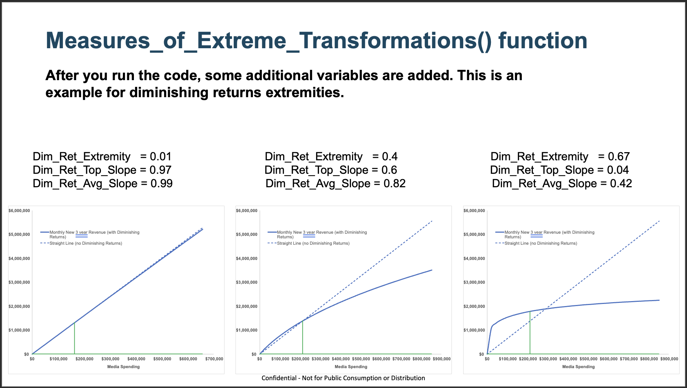

Main documentation
MMM Section¶
Introduction¶
Marketing Mix Modeling (MMM) is a powerful analytical approach that helps businesses understand the impact of marketing activities on business outcomes. By analyzing data across multiple marketing channels, MMM helps you optimize marketing spend, predict future outcomes, and make data-driven decisions.
The msmp.emea R package provides a structured approach to perform MMM analysis with ease. It automates many of the key tasks required in an MMM analysis, such as data preparation, model estimation, and result interpretation.
With msmp.emea, analysts can:
- Set Up Projects Easily: Automatically generate a structured project folder to keep analyses organized.
- Ingest and Clean Data: Read client data from various sources and apply essential preprocessing steps to make sure it's ready for analysis.
- Transform Data: Apply necessary transformations such as scaling, lagging, and feature engineering to prepare the data.
- Estimate Model Coefficients: Fit the MMM model to the data and extract key parameters for analysis.
- Decompose Results: Break down the contribution of each marketing channel for actionable insights.
- Calculate Response Curves: Understand diminishing returns and optimize media spend.
- Export and Save Results: Store results in structured formats for further analysis and reporting.
This guide will walk you through the entire process of using the msmp.emea package to conduct MMM analysis. Whether you’re new to MMM or an experienced analyst, msmp.emea streamlines the process and helps you focus on interpreting results and driving strategic decisions.
Package Installation¶
The first step is to install the msmp.emea package on your machine. Follow the steps below to install the package and verify that everything is set up correctly.
The msmp.emea package is hosted on Bitbucket.
If you or your team need access, please contact us at nicholas.smerald@annalect.com, bingen.gan@annalect.com, or giuseppe.nicoletti@annalect.com to request repository permissions.
Authentication requirements¶
To download the package from our private Bitbucket repository, you must authenticate your access. Please ensure the following:
- You have access to the Bitbucket repository.
- You have created a Bitbucket App Password with the appropriate permissions (typically read access to repositories). This is required because Bitbucket no longer supports account passwords for Git operations.
How to Find Your Bitbucket Username:
- Log in to your Bitbucket account
- Go to your Account settings page
- Under Bitbucket profile settings, look for the Username field — this is the username you'll use when authenticating with Git or installing packages.
Creating a Bitbucket App Password:
- Log in to your Bitbucket account
- Go to your App passowrds page
- Click Create app password.
- Give it a label (e.g., “msmp.emea install”).
- Select the minimum required permissions (usually under "Repositories" > "Read").
- Save the password somewhere secure — you won't be able to see it again.
To avoid re-entering your Bitbucket username and password each time, you can store them securely in your local .Rprofile so they’re automatically loaded into your R environment.
Step-by-step instructions:
- Open your
.Rprofileby running the following command in your R console:
usethis::edit_r_profile()
- Paste the following lines into the file, replacing the placeholders with your actual Bitbucket username and password:
# Set Bitbucket credentials (replace with your actual username and password)
options(bitbucket_user = "my_bitbucket_user")
options(bitbucket_pass = "my_bitbucket_password")
# Automatically load credentials into your environment
bitbucket_user <- getOption("bitbucket_user")
bitbucket_pass <- getOption("bitbucket_pass")
- Save the file and restart your R session to apply the changes. Note: This method stores your credentials in plain text.
Dependencies¶
Before installing the msmp.emea package, make sure the following dependencies are available on your machine:
devtools: This package is required to install packages directly from Git repositories (like Bitbucket).
You can install it from CRAN using:
install.packages("devtools")
Troubleshooting¶
Note: devtools itself has several system-level dependencies (e.g., Rtools on Windows or Xcode on macOS). Make sure these are installed if you run into errors during installation.
Before installing the package, it's important to set the download method to "wininet" to avoid potential issues with downloading files. This method is specifically designed for compatibility with Windows and can help prevent common errors related to internet connectivity or HTTPS certificate validation. Please run the following command in your R session before installing the package:
options(download.file.method = "wininet")
In most cases, no additional setup is needed before installing packages. However, if you encounter issues with package downloads—especially related to HTTPS or certificates—you can explicitly set the download method to "libcurl", which is well-supported on macOS.
To do this, run the following command before installing the package:
options(download.file.method = "libcurl")
This can help ensure stable and secure downloads using the system's native networking libraries.
Installation type¶
You may be installing the msmp.emea package for the first time, or updating an existing installation to ensure you’re using the latest version. Follow the appropriate instructions below.
Use this option if you’re installing the package for the first time:
remotes::install_bitbucket(
repo = "omguk-annalect/msmp.emea",
auth_user = bitbucket_user,
password = bitbucket_pass)
If you already have the package installed and want to update it:
- First, uninstall the existing version:
remove.packages("msmp.emea")
- Restart your R session to clear any locked namespace.
- Reinstall the latest version from Bitbucket:
remotes::install_bitbucket(
repo = "omguk-annalect/msmp.emea",
auth_user = bitbucket_user,
password = bitbucket_pass)
This section is intended for advanced users or testers who need to install a specific development version of the package.
If you need to install a version from a branch other than master, or from a specific commit (e.g., to test changes), you can use the ref argument in the remotes::install_bitbucket() function:
remotes::install_bitbucket(
repo = "omguk-annalect/msmp.emea",
ref = "branch-name-or-commit-hash",
auth_user = bitbucket_user,
password = bitbucket_pass
)
Replace "branch-name-or-commit-hash" with the name of the development branch (e.g., "dev-feature-x") or a specific commit SHA (e.g., "9f8c3a2d4e").
Check Installation and Version¶
After loading the package, run the following to confirm the version installed:
library(msmp.emea)
packageVersion("msmp.emea")
If the output shows the expected version number (e.g., v0.61.3), the installation was successful.
Data Structure¶
Before diving into model workflow, it's important to clarify how data should be structured, as this affects how the package processes inputs and ensures consistent behavior across different types of datasets — whether panel or non-panel.
Panel vs. Non-Panel Data¶
In the context of Marketing Mix Modeling (MMM), panel data refers to datasets that contain observations across multiple units (such as regions, brands, or stores) over time. Each unit has its own time series, allowing analysts to capture both temporal dynamics and cross-sectional variation. This can improve model robustness by leveraging patterns across similar entities and supporting more generalizable insights.
By contrast, non-panel data (also known as time series or aggregate data) includes a single stream of observations over time, typically representing national-level performance or a single entity.
While simpler to manage, non-panel data limits the ability to control for unit-specific effects and can lead to more fragile estimates if the dataset is small or noisy.
| Date | Car Model | Orders | TV Spend | Radio Spend |
|---|---|---|---|---|
| 2022-01-01 | Alpha | 91 | 872.13 | 2916.01 |
| 2022-01-01 | Beta | 154 | 2412.97 | 3266.66 |
| 2022-01-01 | Delta | 115 | 3973.21 | 1752.63 |
| 2022-01-01 | Gamma | 96 | 175.27 | 4847.49 |
| 2022-01-08 | Alpha | 71 | 7417.53 | 3864.92 |
| 2022-01-08 | Beta | 151 | 1462.11 | 1039.69 |
| 2022-01-08 | Delta | 165 | 3163.78 | 3402.06 |
| 2022-01-08 | Gamma | 78 | 9267.57 | 2904.78 |
| 2022-01-15 | Alpha | 107 | 9244.82 | 2923.08 |
| 2022-01-15 | Beta | 91 | 2707.85 | 4926.91 |
Note: Car Model is the panel identifier used to group data by vehicle type.
Why Use a Panel Format¶
Our modeling approach standardizes how data is treated by assuming a panel structure for all input datasets. This provides consistency in how models are built, regardless of the original data format.
If a dataset is not naturally a panel (i.e., it contains only a single time series), we automatically add a grouping column to create a "panel of one". This ensures that all processing and modeling routines — such as decomposition, contribution analysis, and cross-validation — can be applied uniformly, without needing special handling for different data types.
| Date | Panel Col | Orders | TV Spend | Radio Spend |
|---|---|---|---|---|
| 2022-01-01 | client_name | 151 | 3550.62 | 4911.53 |
| 2022-01-08 | client_name | 129 | 5245.67 | 2383.74 |
| 2022-01-15 | client_name | 103 | 9522.32 | 1516.49 |
| 2022-01-22 | client_name | 151 | 7284.52 | 4516.02 |
| 2022-01-29 | client_name | 150 | 6993.12 | 4187.69 |
| 2022-02-05 | client_name | 111 | 5301.55 | 1624.52 |
| 2022-02-12 | client_name | 125 | 8073.22 | 4493.61 |
| 2022-02-19 | client_name | 155 | 2835.41 | 1832.87 |
| 2022-02-26 | client_name | 109 | 8590.96 | 4512.57 |
| 2022-03-04 | client_name | 143 | 826.44 | 2390.48 |
Note: Panel Col identifies groups when panel structure is required. If the data isn't in panel format, this will be generated automatically.
Advantages of a Unified Approach¶
Treating all datasets as panels simplifies the architecture and improves model scalability. It allows us to apply the same logic for feature engineering, constraints, and optimization routines — whether the user provides a multi-brand dataset or a single-country time series.
This also makes it easier to expand to true panel use cases in the future, as the underlying structure already supports multiple groups.
Folders Setup¶
This is the initial phase where (in your workflow template) you define the modeling scope, select the business KPIs (e.g., revenue, conversions), and determine the modeling granularity (e.g., weekly, country-level). The workflow will guide you to create a project folder structure and set configuration files or paths for your inputs and outputs.
Once you run the project_init() function, a new folder structure will be created on your machine. This structure is designed to help organize your data and outputs so that the package can easily access the files it needs to run the analysis.
Folders and File Overview¶
The following files and folders are automatically created by the package during project initialization. They provide a standardized structure to support a smooth and reproducible modeling workflow.

This folder contains all raw and pre-processed input data used in the modeling process. This may include media spend, sales or conversions, control variables (e.g., pricing, promo), seasonal flags, and any other relevant time-series data. Ideally, files here are versioned and read-only, ensuring consistency across runs.
The Exploratory Data Analysis (EDA) folder holds visualizations, summary statistics, and diagnostics used to understand and validate the input data before modeling.
Note: this feature is still under development
This folder contains a copy of the main R markdowns that run the modeling pipeline. These scripts handle tasks such as initializing the model object, setting up the model, transforming variables, running the estimation, and generating outputs. Think of this as the "engine room" of your workflow.
This folder stores configuration files (mostly .CSV) that define model inputs and hyperparameters. These settings include which variables are included, prior distributions, transformation settings (e.g., adstock, saturation), and modeling time windows.
Input Files¶
These are the key files you'll interact with throughout the modeling phase. They form the foundation of the workflow, guiding what data will be transformed, analyzed, and ultimately modeled.
The Model Setup file is the first configuration you'll edit when starting your analysis. It defines key parameters that control how the model is structured and what data is used. These settings guide both model estimation and response curve analysis.
This file is essential for configuring your analysis and should be carefully reviewed and updated before running any model.
| Parameter | Explanation | Mandatory_Field |
|---|---|---|
| ModelForm | Specifies the regression model form. Options include 'lin_lin' (linear), 'log_lin' (log-transformed response), and 'mc_lin' (mean-centered transformed response). | Yes |
| Panel | Indicates whether the model supports panel data structure. Set to 'Y' to ensure compatibility, even for non-panel use cases. | Yes |
| Time | Name of the time-related column in the dataset, typically representing months or weeks. | Yes |
| Geo | Not currently in use. | No |
| CS | Defines the main cross-sectional unit used in panel models (e.g., product, market, or vehicle). | Yes |
| CS2 | Optional second-level cross-sectional identifier (not currently available) | No |
| BeginDate | Start date for the analysis period. Format should be DD/MM/YYYY. | Yes |
| EndDate | End date for the analysis period. Format should be DD/MM/YYYY. | Yes |
| numSubModel | Optional. Specifies how many sub-models are linked to the main model. | No |
| Submodel_Link1 | Name of the parent variable in the main model used to link to the first sub-model. | No |
| Submodel_Link2 | Name of the parent variable used to link to the second sub-model. | No |
| Submodel_Link3 | Name of the parent variable used to link to the third sub-model. | No |
| subModel1 | Name or label of the first child sub-model to be used in hierarchical modeling. | No |
| subModel2 | Name or label of the second child sub-model to be used in hierarchical modeling. | No |
| subModel3 | Name or label of the third child sub-model to be used in hierarchical modeling. | No |
| SimStart | Start date for the simulation period used in response curve generation. Format: DD/MM/YYYY. | Yes |
| SimEnd | End date for the simulation period used in response curve generation. Format: DD/MM/YYYY. | Yes |
| Mroi | Increment size used to simulate changes in media investment when generating response curves. | Yes |
The Variables file defines all variables used in the model along with their inclusion status and transformation settings. This file gives you full control over how each variable is treated in the modeling pipeline.
This file is critical for customizing model inputs and ensuring each variable is preprocessed appropriately for the analysis.
| Column_Name | Explanation | Workflow_Component |
|---|---|---|
| Orig_Variable | Original name of the variable as it appears in the raw dataset | All functions |
| Trans_Variable | Name to use for the variable after any transformation | All functions |
| AggregateVariable | Indicates a grouping variable for aggregating similar sub-variables | Decomposition |
| Variable_Type | Specifies the type of variable (e.g., Dependent, Trend, Default) | Decomposition |
| Include | Binary flag (1/0) indicating if the variable should be included in the model | All functions |
| VaryBy | Specifies if the variable coefficient varies by a grouping (only for panel data) | Coefficients estimation |
| Transform | Whether the variable should be transformed (Y/N) - Keep this as default. | Transformation |
| TransformType | Type of transformation (e.g., adstock, log, lag, saturation) | Transformation |
| Lag | Number of periods to lag the variable | Transformation |
| Scale | Scaling factor to adjust the variable values | Transformation |
| Effective | Ad Response transformation (tbd) | Transformation |
| Recency | Ad Response transformation (tbd) | Transformation |
| Decay | Decay rate for adstock or adr (value between 0 and 1; a higher value means faster decay). | Transformation |
| Period | Ad Response transformation (tbd) | Transformation |
| Window | Size of the moving window (e.g., for rolling averages) | Transformation |
| Trim | Currently not in use | Transformation |
| Length | Maximum number of time periods over which advertising memory can persist. | Transformation |
| Peak | Indicates the peak point in a adstock transformation. | Transformation |
| AT_Divisor | Arc-Tangent parameter (rarely used) | Transform (for diminising returns) |
| NE_Divisor | Negative Exponential parameter (rarely used) | Transform (for diminising returns) |
| A | Ceiling of ABC curve (keep as 1) | Transform (for diminising returns) |
| B | Parameter of ABC curve (typically set between 20–80% of the variable’s maximum value.) | Transform (for diminising returns) |
| C | Parameter of ABC curve (If c > -1, the function is logarithmic; if c < -1, the function follows an S-shaped curve). | Transform (for diminising returns) |
| Max_Grps | Not in use | Transformation |
| Prior_Mean | Prior mean for Bayesian estimation | Coefficients estimation |
| Prior_SD | Prior standard deviation for Bayesian estimation | Coefficients estimation |
| PriorSD_Adj | Adjustment factor for prior standard deviation | Coefficients estimation |
| Sign | Not in use | nan |
| Override | Not in use | nan |
| Simulate | Indicates if the variable is used for response curves | Response Curve |
| RC_Shape | Defines the shape of the response curve for the variable | Response Curve |
| Explore_correlation | Whether to include the variable in correlation diagnostics | EDA |
| Explore_transformation | Whether to explore alternate transformations during modeling | EDA |
| Spent_Variable | Reference to the spend version of the variable (if separated from exposure) | Response Curve |
| Cost_per_unit | Unit cost of the media (used in efficiency calculations) | Response Curve |
| Source | Metadata field indicating where the variable came from | Transformation |
| TimeUnit | Time granularity of the variable (e.g., weekly, monthly) | Transformation |
This folder captures all outputs generated by the model, such as contribution decompositions, model diagnostics, or a copy of the model object. It may also include visual reports or summary tables. Outputs here are often used to support stakeholder decision-making.
This folder is created for the users to store documentation about the project: modeling rationale, decisions, assumptions, meeting notes, and final deliverables. It might also contain markdown files, slide decks, or PDFs that explain the project flow, outcomes, and business recommendations.
This file contains a unique identifier for the model run. It helps track and reference a specific set of modeling configurations, inputs, and outputs, especially in workflows that involve multiple iterations or parallel experiments.
The model_id.txt file typically includes a short string that is automatically generated by the pipeline.
Why it's important:
- Ensures traceability between model inputs and outputs.
- Allows consistent naming of output files.
- Makes collaboration easier by giving analysts a common reference point.
Typical usage in the pipeline:
- Read in during model initialization to tag outputs.
- Stored alongside outputs and logs.
Modeling Workflow¶
Our workflows are designed to ensure consistency, transparency, and reproducibility across projects.
The msmp.emea package supports two distinct yet complementary approaches for analyzing media effectiveness: a Bayesian Marketing Mix Modeling (Bayesian MMM) approach and a more granular High-Definition (HD) modeling approach. Both share a common foundation but are designed to answer different types of business questions.
Overview of Modeling Approaches¶
The Bayesian MMM approach is a modern version of the classical Marketing Mix Modeling framework, implemented using Bayesian inference. This method enables the quantification of media effectiveness and ROI while explicitly accounting for uncertainty in parameter estimates.
Key characteristics of the Bayesian MMM approach:
- Prior knowledge incorporation: Prior distributions can be used to incorporate historical learnings or domain expertise into the model.
- Flexibility: The Bayesian framework supports complex modeling features such as hierarchical structures, seasonality components, and non-linear saturation effects.
This approach is ideal when the goal is to build robust, interpretable models with quantified uncertainty and leverage prior knowledge to stabilize estimates in data-scarce environments.
HD MMM is a build on top of the current MMM toolkit where you would be able to take a more detailed look into the contributions of your total media channel. For example, two main strategies were used for a digital channel - strategy A and strategy B.
The HD algorithm will then be able to approximate the effectiveness of each strategy based on the flighting pattern and give you a breakdown of each strategy's contribution that makes up the total digital channel's contribution in the MMM model.
Workflow¶

Workflow Templates¶
The msmp.emea package includes a set of predefined workflow templates designed to guide you through the media modeling process. These templates are accessible directly from RStudio, helping ensure a standardized, efficient, and reproducible workflow.
Available Templates¶
- Model-Workflow: A standard template for running a complete MMM analysis.
- HD-MMM: A template for Hierarchical Decomposition modeling, enabling granular analysis within channels.
- Unnest-Models: A utility template for unnesting models and analyzing their individual components.
These templates streamline your workflow by reducing setup time, minimizing the risk of error, and ensuring all critical steps are included.
How to Use Templates in RStudio¶
To launch a template in RStudio:
- Click on the New File icon.
- Select R Markdown.
- Choose From Template, then pick the relevant
msmp.emeatemplate.
RStudio will create a new document pre-filled with the appropriate structure, guidance, and placeholders to help you get started quickly.
Detailed Procedure¶
Load and clean data¶
In this step, raw data sources (media, sales, promotions, seasonality, etc.) are loaded and pre-processed. You’ll standardize column formats, handle missing values, align time series, and possibly merge disparate datasets to create a unified modeling dataset.
Model object¶
You create the base model object using the msmp.emea functions. This object acts as the container for all subsequent modeling steps and configurations. It typically includes raw input data, metadata, and placeholder slots for transformed data, priors, and model outputs.
Model setup¶
Here, you define modeling parameters such as the dependent variable (target), media channels, control variables, time windows, and holiday effects. This is where the modeling framework is initialized — effectively “telling” the model what to expect.
Model specification¶
Also referred to as "model spec," this step involves defining how variables enter the model: what transformations are applied (e.g., adstock, saturation), which priors are used in Bayesian estimation, and whether interactions or groupings are introduced. It’s a critical step that shapes the econometric assumptions.
Data Transformation and Validation¶
At this stage, data is transformed according to the model spec: media variables may be adstocked, logged, or saturated. You also perform validation checks to ensure data aligns with model assumptions (e.g., no missing data, consistent timeframes).
Run Model¶
You fit the model using the inference engine provided in msmp.emea. This step will also provide diagnostics for results inspection. You may iterate multiple times, adjusting specifications or priors based on initial results.
Decomposition¶
Here you decompose the predicted values into contributions from each variable or group of variables (e.g., media, price, promotions). This allows you to understand what’s driving performance and quantify the ROI of each input.
Response Curves¶
Response curves (a.k.a. saturation curves) show how the output responds to incremental changes in each media variable. These are essential for budget planning and optimization, helping identify diminishing returns and efficient spend thresholds.
Supported Transformations¶
The msmp.emea package supports several transformations to handle data in ways that optimize the MMM process. Some of the key transformation types are:
| TransformType | Caller | Explanation |
|---|---|---|
| adstockv3 | Adstock | Applies a standard adstock transformation to model lagged and decaying media effects. |
| adstockv4imp | Adstock with rescaled impressions | Similar to standard adstock but used for impression data, applying rescaling to account for volume. |
| adr | Ad response | Applies an advertising response function, typically used for modeling non-linear saturation effects. |
| lag | Lag | Shifts the variable backward in time to capture delayed effects. |
| log | Log | Applies a logarithmic transformation to reduce skew and stabilize variance. |
| ma | Moving average | Smooths the variable by averaging over a specified time window to reduce noise. |
| abcnew | For diminishing returns | Applies a functional form tailored for diminishing returns (e.g., sigmoid or Hill-type curves). |
| none | No transformation | Leaves the variable untransformed. Use when no preprocessing is required. |
| customt() | Custom transformation | Applies a user-defined transformation using a formula-like string. For example, customt("x^2") squares the input." |
| boxcox | Boxcox | Applies a Box-Cox transformation to stabilize variance and approximate normality. |
The Transform function allows you to apply multiple transformations by chaining them together using underscores (_). Each TransformType will be applied in the order specified, from left to right.
Advanced Tools¶
The features described in this section go beyond the core msmp.emea workflow.
While they are not required for the standard analysis pipeline, they are designed to support analysts who need greater flexibility or advanced functionality when processing and modeling data.
These tools aim to streamline common tasks, handle edge cases, and provide more control over specific steps in the modeling process, ultimately making the overall workflow more adaptable to different analytical needs.
new_ga¶
The msmp.emea package includes a function called new_ga that runs a genetic algorithm (GA) to find the best parameter values for a model simulation. It works by testing many different combinations of parameters and selecting those that lead to better simulation results, based on a score defined by the user.
The goal is to maximize this score, so the function keeps improving the parameter sets over several generations. It automatically filters out poor or invalid solutions, applies any constraints set by the user, and ensures that only simulations meeting minimum performance standards are considered.
This makes the function a useful tool for tuning models when the best settings are not known in advance.
Function description¶
The first time you run new_ga, it automatically creates a new Excel file in your project folder at "07_ga_search_constraints/_ga_all_inputs.xlsx". This file includes three sheets that define the full set of constraints the genetic algorithm will use to search for the optimal solution to your modeling problem.
The Test_Variables sheet controls how each raw variable from Variable.csv is used by the Genetic Algorithm (GA). Each row represents a single original variable and specifies:
| Column | Populate From / Allowed Values |
|---|---|
| Orig_Variable | The exact variable name as it appears in Variable.csv. |
| Variable_Group | Use the grouping column from Variable.csv to assign this variable to one of your pre-defined selection-rule groups. |
| Include | Controls GA inclusion: |
- 1 = force include |
|
- 0 = force exclude |
|
- test = let GA decide include vs. exclude |
|
| VaryBy | Coefficient variation across panels: |
- None = one coefficient for all panels |
|
- <panel_column_name> = separate coefficients by panel |
|
- test = GA chooses best approach |
|
| Transform | Whether to apply a transformation: |
- Y = use the TransformType defined in Variable.csv |
|
- test = GA will try different transformations |
|
| TransformType | One of: lag, log, ma, adstockv3, abc, abcnew, adr. |
| Lag | Two integers separated by ; (e.g. 1;4 for lags 1–4). |
| Scale | (Optional) reserved for future use—leave blank unless your process documentation specifies otherwise. |
| Effective | Two integers separated by ; defining the “effective window” length. |
| Recency | Two integers separated by ; for the recency parameter. |
| Decay | Two decimals between 0 and 1 separated by ; (e.g. 0.1;0.5). |
| Period | Two integers separated by ; for periodicity tuning. |
| Window | Two integers separated by ; for the adstock or moving-average window. |
| Length | Two integers separated by ; for adstock length. |
| Peak | Two integers separated by ; for the ABC/ADR peak parameter. |
| A | Constant A for ABC/ADR—always set to 1. |
| B | Three integers separated by ;, pre-populated using the IQR of the raw variable (e.g. 10;50;100). |
| C | Two values between –5 and 0 separated by ;, pre-populated with -2;-0.5. |
| Source | Populated from Variable.csv (e.g. internal_db, third_party). |
| TimeUnit | From Variable.csv (e.g. week, month). |
| data_structure | From Variable.csv (e.g. time-series, cross-sectional). |
| exp_perc_contribution | Two numbers between –1 and 1 separated by ; (–100% to +100%). Pre-populated with -1;1 to allow full range. |
| refresh_priors | - Y = recompute new priors at the midpoint of exp_perc_contribution |
- N = use priors already defined in Variable.csv or your custom-priors file |
Example Row¶
| Orig_Variable | Variable_Group | Include | VaryBy | Transform | TransformType | Lag | Scale | Effective | Recency | Decay | Period | Window | Length | Peak | A | B | C | Source | TimeUnit | data_structure | exp_perc_contribution | refresh_priors |
|---|---|---|---|---|---|---|---|---|---|---|---|---|---|---|---|---|---|---|---|---|---|---|
| TV_Spend | Media | test | None | Y | lag | 1;4 | 1;8 | 0;5 | 0.1;0.5 | 1;3 | 1;4 | 1;4 | 2;6 | 1 | 10;50;100 | -2;-0.5 | Variable.csv | week | time-series | -1;1 | Y |
The Scoring_Criteria sheet controls how each simulation is evaluated. By setting weights through the importance column, you can guide the GA to prioritize one or multiple performance metrics, adapting the optimization to your analysis goals.
This makes it easy to tailor the scoring logic to different project needs—whether you want to maximize model fit, enforce business constraints, or balance multiple objectives simultaneously.
| Field | Type | Description | Example | Notes |
|---|---|---|---|---|
| metric | string | The name of the metric. | "R2" |
Not editable |
| metric_type | string | A human-readable category or description of the metric. | "Model fit quality (adjusted R2)" |
Not editable |
| panel | string | Identifier for the panel or segment this metric belongs to. | "region_1" |
Not editable |
| threshold_min | float | The lower bound of the “acceptable” range for the metric. | 0.9 |
Nullable; min ≤ max |
| threshold_max | float | The upper bound of the “acceptable” range for the metric. | 1 |
Nullable; ≥ min |
| importance_raw | number | Raw importance score (unitless). | 5 |
≥ 0 |
| importance_pct | float | Importance as a percentage of the total (0–1). | 0.1667 |
Calculation; not editable |
The Selection_Rules sheet is optional and helps filter out simulations that don't meet specific criteria.
For instance, if you're testing five price variables but want the final model to include only one of them, you can use this sheet to define minimum and maximum limits for how many variables from the same group can be included. This ensures the algorithm respects structural or business constraints during optimization.
To use this function, the user must provide:
- Basic numeric settings for the genetic algorithm (e.g., population size, generations, seed).
- Logical flags to control simulation filtering and behavior.
- Optional numeric thresholds for contribution filtering and performance.
The function returns a list containing several elements that summarize the results of the genetic algorithm optimization.
The sim_summary is a data frame that provides an overview of all simulations along with their corresponding scores, allowing users to compare overall performance.
The sim_specs element is a list detailing the specific parameter configurations used in each simulation.
For a deeper evaluation, sim_scores contains a data frame with more granular scoring information for each run.
The output also includes sim_priors, which lists any prior constraints applied during the optimization, and original_constraints, a data frame capturing the initial set of modeling constraints.
Finally, the seed value used during the run is returned to ensure reproducibility.
Tips & Reminders¶
- Semicolon (
;) is the universal separator for all ranges. - Scale is blank by default—only populate if your workflow explicitly requires it.
- Verify that every
TransformTypeyou use is implemented in your GA engine. - Double-check your
Variable_Groupnames against theSelection_Rulestab to avoid typos. - Use this spec as your master document; apply your corporate styles (fonts, numbering, branding) as needed.
Unnesting Models¶
Unnesting refers to breaking down complex models into simpler, more manageable parts. This is useful when analyzing submodels or when you want to examine the components of a hierarchical structure.
Purpose and When to Use¶
Unnesting is helpful when you need to isolate the effects of individual components in a nested model.
Training Materials¶
The msmp.emea package provides training materials to help you get familiar with the workflow and the features of the package. These materials are automatically downloaded and set up in a dedicated folder on your machine when you run the install_training() function.
Running install_training()¶
After installing msmp.emea, you can access the training materials by running the following command in your RStudio console:
msmp.emea::install_training()
This will create a folder containing the training materials, including documents, data files, and examples to help you practice and understand how to use the package.
Training Folder Structure¶
Once you’ve run the install_training() function, a new folder will be created with the necessary materials. This folder includes:
- Guides: Documentation and guides on the various steps involved in the MMM process.
- Data: Example datasets that you can use for practice.
- Modules: Example scripts that demonstrate the usage of
msmp.emeafunctions.
Make sure to explore these materials, as they will serve as a foundation for understanding the full capabilities of the package.
Troubleshooting¶
Platform-Specific Notes (Windows vs macOS)¶
While the workflow is designed to work seamlessly on both Windows and macOS, there might be some system-specific configurations that you need to be aware of. For example, Windows users may need to include specific commands to manage file paths or dependencies. If you encounter any issues, check the documentation or reach out for support.
Common Pitfalls¶
(placeholder)
Reporting Issues¶
If you encounter any bugs or issues with the documentation, please reach out so that we can address them in future updates.
Documentation¶
For help with functions, you can use R's built-in help system. For example:
To get detailed documentation for a function, use:
??msmp.emea::function_name
This will open the help page for the specified function.
Final Notes¶
(placeholder)
Process Steps¶
(placeholder)
Run Model¶
After setting up your input files and transformations, you can run the model using the predefined functions in the package. The results will include key parameters such as coefficients for each marketing channel and insights into their effectiveness.
Understanding Output¶
The output from the model will include detailed information on the contribution of each channel, as well as response curves that illustrate how different levels of spend impact outcomes.
Response Curves¶
Response curves are crucial for understanding how marketing spend translates into outcomes such as sales or revenue. These curves model diminishing returns, helping you optimize your spend by showing the point where increasing spend no longer generates proportionate returns.
Fitting ABC Curves¶
The ABC curve is often used to model diminishing returns in marketing. By fitting this curve to the data, you can understand how increasing spend on a given marketing channel will impact the return on investment.
Channel Optimization¶
(placeholder)
The 03_settings folder, for instance, contains key files such as:
- Model Setup: Contains parameters to define the model type and analysis period.
- Variables: Lists all the variables used in your model and their corresponding transformations.
- Fit Curves: Stores the results of fitting response curves to your data.
This structure ensures that you don’t need to manually manage the files, making it easier to focus on analysis.
HD MMM Section¶
Introduction¶
This document serves as a guide to help users run HD MMM projects using the msmp.emea package. This document and the codebase are maintained by the Annalect EMEA team, feel free to reach out to the team on any questions you have.
The flowchart below outlines a high level overview of how a HD project will look like.

Pre-requisites¶
Before going into the project setup, there are a few pre-requisites that we would like to outline:
-
Have the latest package version of
msmp.emeainstalled. Link to the repo can be found here: msmp.emea -
An MMM model. HD is a build on top of MMM so it requires an already established MMM model. Do note that the codebase requires the user to create the MMM models within the
msmp.emeaenvironment. If your MMM models are built using another solution, do reach out to a member of the team to discuss the best way forward. -
Media data splits. Having good data is central to a HD model's success. HD integrates this information by incorporating two additional files on top of the already established MMM model - HD template and HD meta files (See examples below). Both files can be created from the media data using the
msmp.emea::process_hd_data()function within the package.
| Example of a HD template table | Example of a HD meta table | |||||||||||||||||||||||||||||||||||||
|---|---|---|---|---|---|---|---|---|---|---|---|---|---|---|---|---|---|---|---|---|---|---|---|---|---|---|---|---|---|---|---|---|---|---|---|---|---|---|
|
|
Project Setup¶
In this section, we will walk through the setup of a HD model using the RMarkdown template in detail. This guide will cover each step in the Rmd template and explain what it is trying to achieve.
-
Initial HD project setup
- Intialise the Rmd file
- With the
msmp.emeapackage installed, you should be able to see a HD MMM RMarkdown template. Initialise this file within your project folder. Save this file in the same location as your MMM model Rmd. You can create a template from RStudio by following the instruction below. -
File -> New File -> R Markdown... -> From Template -> HD-mmm -> Ok
- With the
-
Define Yaml Parameters
- Start by defining Yaml parameters at the top of the file. Ensure all parameters are accurate, particularly
mmm_model_id, which must match the corresponding entry in thetable_of_model_ids.csv -
--- title: "Project Title" author: "Your name" date: "Date" params: model_client: "client_name" model_product: "product1" model_region: "country" model_year: "2023" model_version: "1.0" model_kpi: "my_kpi" model_panel: FALSE mmm_model_id: "Your MMM model ID" hd_model_version: "v_1.0" ---
- Start by defining Yaml parameters at the top of the file. Ensure all parameters are accurate, particularly
-
Set Date Ranges
- Define the transform and modelling date ranges of your HD model. These date ranges will need to be the same as your MMM model as HD is very sensitive to this.
- For example, you can have a case where your transform start date is a month earlier than your actual model start date to take into account for media adstocks.
- Intialise the Rmd file
-
Setting Up and Loading in Data
-
Run Initialization
- Execute the
hd_mmm_init()function to generate the folder structure required for the project. - Based on the parameters in the Yaml file, it will create a folder called
07_hd_mmmat{model_client}_{model_year}/{model_region}_{model_product}_{model_kpi}/{model_version}
- Execute the
-
Populate the required files for the project
- HD Variables: The
07_hd_mmm/01_hd_settings/01_input_hd_variablesfolder will be auto-populated with the Variables.csv file from the MMM model output folder. The user need only check the csv file such that all HD media variables have the labels at "AggregateVariable" column set to "Media" and "Simulate" column set to "Y". - HD Template: User will need to copy the hd template csv file into the folder
07_hd_mmm/01_hd_settings/02_input_hd_template. - HD Meta: User will need to copy the hd meta csv file into the folder
07_hd_mmm/01_hd_settings/03_input_meta. - HD Data (Optional): If HD level data is already supplied at the MMM stage, there is nothing to do here. Otherwise, user will need to populate the folder
07_hd_mmm/01_hd_settings/04_input_hd_datawith the relevant csv files.
- HD Variables: The
-
Re-run the initialisation function
- Once the previous step has been completed. Re-run the
hd_mmm_init()function. - If successful, you should be able to see 3 new files in the
07_hd_mmm/01_hd_settingsfolder.{mmm_model_id}_HDModObj.RData: A copy of your model object{mmm_model_id}_HDVariables.csv: HD variables csv file, it contains all the information on variables in the model and any HD level variables{mmm_model_id}_Meta.csv: HD meta file
- Once the previous step has been completed. Re-run the
-
-
Setup HD Variables, Meta and Weights file
-
At this stage, we should already have most of the HD files setup. The crucial step in this chunk is to make sure that the
PreWeightsfor each HD variables are populated correctly. To facilitate this, user should use theupdate_hd_preweights()function to update the preweights accordingly. For any media variables that cannot be auto-populated by the function, the user can use thevarsandpreweightsargument to populate them manually. -
The key thing to keep in mind is that all HD media variables should be in the same scale (i.e. all HD variables are impressions metric or all are in clicks metrics or roughly in the same ballpark in terms of representative size) due to the weight optimization algorithm which rescales these variables.
-
If this chunk ran successfully, you should be able to see a new file in the
07_hd_mmm/01_hd_settingsfolder.{mmm_model_id}_Weights.csv: HD weights file, this file is where user will provide information on the HD weights (This file will open once the chunk runs successfully)
-
Next step for the user will be to update the Weights file
- User will need to update the
Lower_WeightandUpper_Weightcolumns which corresponds to your HD variables. A common initial bounds to use is [0.7,1.3]. (An example is shown below) -
Here is a brief explanation of what each column of the file means:
- Group & Value: These column corresponds to the group and group names of all variables from the meta file.
Group1corresponds to your MMM level variables whereas the subsequent groupsGroup2,Group3, etc. corresponds to the HD level groupings. - Weight: Weight assigned to the group, bigger number means bigger importance. All weights are initialised to be 1. Weight of 1s for all groups will give you the same results as your MMM model.
- Lower_Weight & Upper_Weight: Lower and upper bound of the weights that you allow the algorithm to explore. You should only set Lower and Upper weights for HD groups, i.e. all
Group1,Intercept,Dependent, andBasevalues should be fixed at 1. - Uncontrolled_Weight: You can ignore this column as this will be populated when we run the weights optimization algorithm.
- Example of a weights table:
Group Value Weight Lower_Weight Upper_Weight Uncontrolled_Weight Group1 Intercept1 1 1 1 1 Group1 Base1 1 1 1 1 Group1 Dependent1 1 1 1 1 Group1 Display 1 1 1 1 Group1 YouTube 1 1 1 1 Group2 Direct 1 0.7 1.3 1 Group2 Programmatic 1 0.7 1.3 1 Group3 Home 1 0.7 1.3 1 Group3 Technology 1 0.7 1.3 1 Group3 Fashion 1 0.7 1.3 1 - Group & Value: These column corresponds to the group and group names of all variables from the meta file.
- User will need to update the
-
-
Update the weights file and run a series of pre-transformation checks
- In this chunk, the functions will run a series of checks on the HD spec and control files (meta and weights file) to detect any errors or flag any warnings.
-
Run Checks and Create Variable Transformations + Weightings for HD MMM
- At this stage we are almost done with the HD setups and will be able to run the optimization algorithm soon. One last step that we need to do is to check whether we are able to recreate the MMM model outputs from our HD setup. This is an important step as it gives us confidence that we have set HD up for success.
- Let's go through some of the key functions in this chunk:
HD_Variable_Tranformations(): HD version of Transform()Distribute_Weights(): Apply weights from the weights file to the HD variables. At this stage all weights should be 1 (Unless the user has provided a different set of weights to initalise HD)Measures_of_Extreme_Transformations(): Gives information on how shape of the adstocks and diminishing returns transformations. An example is shown below
Example for adstock extremity. Example for DR extremity. hd_update_priors(): Updates the priors of the model as the HD variables are in a different scale from the MMM modelDecomposition_Levels(): HD version of Decomp()
- This chunk should run fine without needing any edits to the code. Once the chunk runs, it should create two comparison tables - a decomposition table comparison and a coefficients table comparison.
- Decompoistion table comparison: This is what is important. We should see minimal differences between the two decomps.
- Coefficient table comparison: We can see that the HD model's coefficients for media variables look different from their MMM counterpart. This is because of the scaling that is applied to those variables which will be important in the optimization algorithm.
-
Weights Optimization There are two stages when it comes to optimization of HD weights. First, the algorithm will search for the best possible weights within the bounds specified. After that, a fine tuning algorithm will be run to penalize weights that are not contributing significantly. The idea behind penalizing weights is similar to that of a Lasso or Ridge regression. Similar to how a penalized coefficient will be pulled towards 0, in this case, a penalized weight will be pulled back towards 1. We have broken down this stage into 3 sections: (1) Establishing a rough range the optimal penalty might sit in, (2) Do a grid search of the penalty range, (3) Run the optimization algorithm with the optimal penalty value
-
Uncontrolled weights and penalty range
- In this chunk, we are looking to understand the range of penalty values that we should test for the model. When we run the optimization algorithm with
UCOptset to TRUE, we can see a suggested penalty range printed in the console.
Set the penalty for optimization somewhere between 65.2 and 2693.4 for this data. With a penalty of 271.9 preventing only the worst over-fitting but has very high R-Squared. A penalty of 753.8 a good average amount of control. And a penalty of 936.5 allows only the most statistically significant weights.- Besides that, the uncontrolled weights will also give us an idea of whether the bounds we set for our groups are sufficient. For example, if the uncontrolled weight of a group goes beyond its upper or lower bound, it is advised to widen the bound.
- Testing penalty values
- Once we have the initial penalty values that we can be testing, we can input them into the
penalty_valsvector and run the chunk to test out these values. The chunk willl take a while to run, and once finished, it will create a folder calledhd_penalty_loop_outputsin the main folder and output the results in an excel file. We will talk more about analysing this output in the next section. - This is an iterative process, which means we will need to run this chunk multiple times until we find a good penalty value that works well with the model. For example, I have tested penalty values [10, 20, 50, 75, 100] and have found that 20 seems to be giving me the most optimal result. Next, I will test the penalty values [15, 18, 21, 25, 30] to determine which values in the vicinity of 20 gives me a better result. As you can see, it can take quite a few tries to get to our final penalty value.
- Do note that optimal penalty value may vary from one group to another, so it is important to balance this as we can only have one penalty value in the end.
- Run optimization with optimal penalty value
- After testing all the penalty values and have found the one that is suitable for our model, input that value into the weights optimization function to create our final output.
- With this, we should have everything we need - Final HD Weights, HD Decomp table, and HD Response Curves. All that we need to do now is save the output.
- In this chunk, we are looking to understand the range of penalty values that we should test for the model. When we run the optimization algorithm with
-
Analyzing HD Outputs¶
This section aims to breakdown the excel file output generated from the penalties testing stage. In the file, you will see 4 sheets:
-
RanWeights
- As you can see, this sheet resembles the weights file quite a bit, with a few additional columns. It displays the random weights that we get from the optimization algorithm. If you recall, the optimization algorithm runs in two stages, it first gets the best weight in the range, then it refines the weights using the penalty value. Random weights are the weights we get from the first stage of the optimization (best weights in the range). Therefore, these weights are optimized without the use of penalty values. You can think of these weights as weights we get from a penalty of 0.
- Purpose: To understand whether the algorithm is giving us consistent results across each run. This is very important as it tells us that the algorithm has converged. However, when we see inconsistencies between runs, the user have to dive into why this is the case. There are a few explanation as to why the weights may not have converged:
- Size of the group is too small (inidicated by the size column). When the size is too small, the choice of giving it a weight close to the upper bound or the lower bound yields insignificant change to the model. In this case, user can choose not to weight them at all (set lower and upper bounds to 1).
- Run time is too short. When the search range is large or there are many groups in a level, the search space is big and the algorithm hasn't had the chance to explore a good chunk of the parameter space. In this case, it will be wise to increase the run time.
- In cases where the groups are very big and relationship between groups are complex. It is sufficient to observe whether the weights are telling a consistent story, e.g. Group X in Level 2 consistently outperforms the other groups in the same level although it takes on different values in each run.
-
Weights
- This sheet is very similar to the RanWeights sheet, with a slight difference whereby instead of random weights, these weights are the fine tuned version of random weights (weights we get from the second stage of the optimization algorithm). Therefore, these weights are heavily influenced by the penalty values.
- Purpose: Look for consistencies across different runs within the same penalty value. Choosing the best penalty value will be up to the analyst's judgement. However, do keep in mind that the weights should be reasonable and tell us a meaningful story. (e.g., A set of weights of 1s as our output isn't telling us anything new as these are the default results we get from our MMM model)
-
Effect
- You can think of effect as a value showing how significant the group is at increasing the model's performance when it's weight is increased/ decreased by a small step in either direction. The bigger the value, the more significant the group is.
-
Decomp
- As looking at the decomposition table is an important factor while deciding on penalty values, its corresponding decomp table of each weights optimization run is saved here so the user can always refer to it when needed.